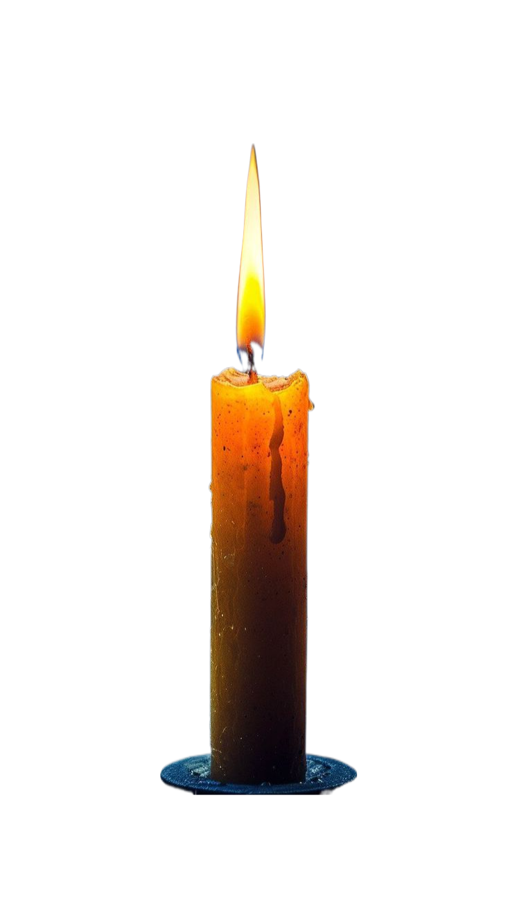
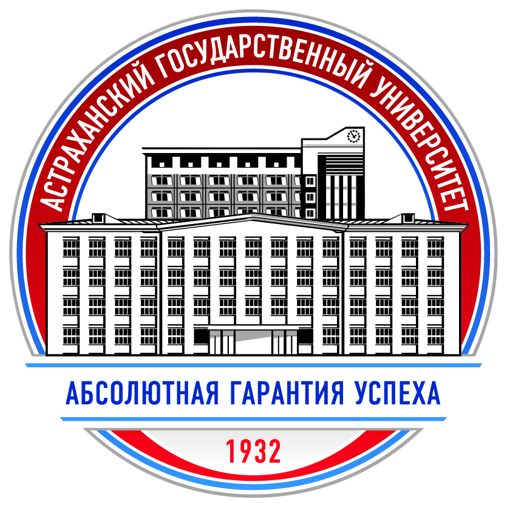
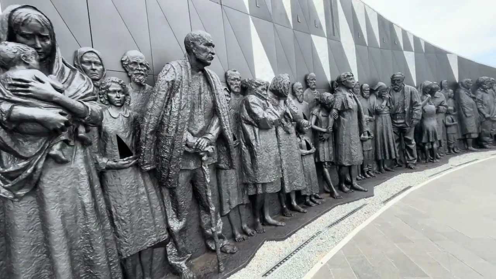
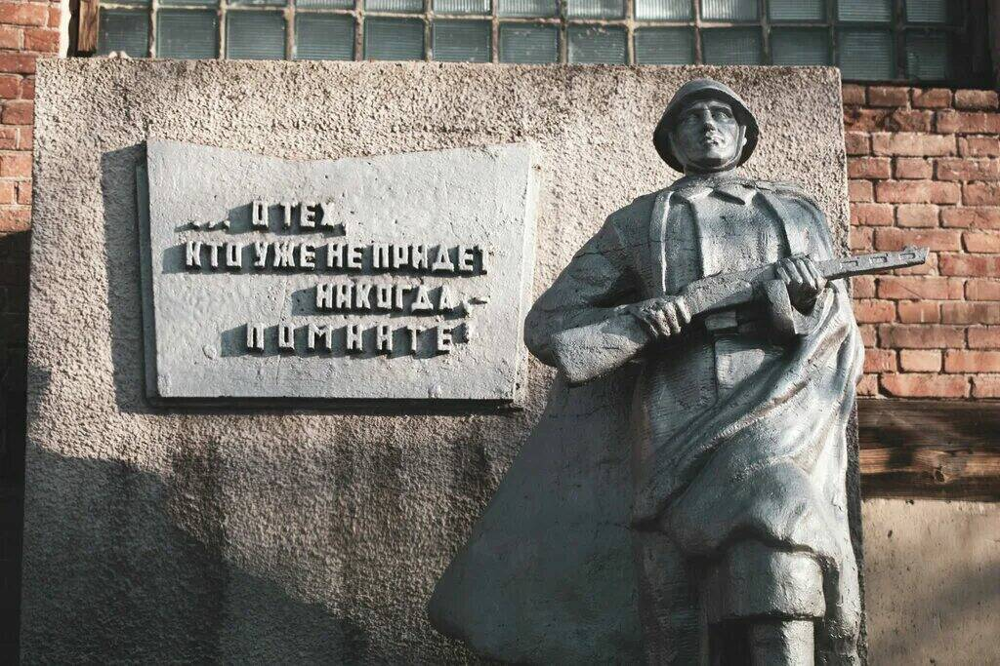
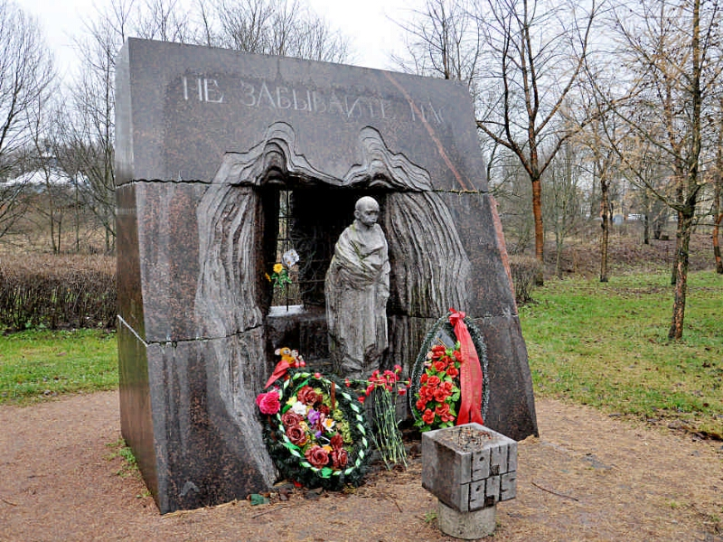

Междисциплинарный проект

Память жертв нацистского геноцида.27 января 2024 года в деревне Зайцево Гатчинского района Ленинградской области был открыт мемориал мирным жителям Советского Союза, ставшими жертвами нацистского геноцида в годы Великой Отечественной войны. Сама деревня Зайцево, возникшая в XIX веке под двойным наименованием Юл(ь)кюля («Верхняя деревня») и Заицова, была освобождена от немецко-фашистских оккупантов 22 января 1944 года.
Подробнее
Погибшим в годы войны.Памятник погибшим учителям и учащимся средней школы в годы Великой Отечественной войны (1941–1945 гг.) расположен в селе Ребриха Ребрихинского района Алтайского края.

Жертвам концлагерей.По замыслу авторов, комплекс начинается с аллеи, символизирующей судьбу людей, прошедших через коридоры застенков. Адрес: г. Красное село, пр. Ленина, д. 89 .
ПодробнееДля более подробного изучения мемориалов и памятных мест воспользуйтесь официальным ресурсом:
Перейти на сайт «Место памяти»